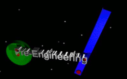

Computer Projects
The EcoTrackerThe white blips are bats, recorded by an infrared video camera. The colored trails are generated by my algorithm. |
The program at left was conceived of and implemented by me. At the time I was a Ph.D. student at Boston University. The program resulted in a number of research papers. The program was written in C and C++ and designed to run on a Linux platform using X11 graphics. It also runs on a MacIntosh computer in the X11 terminal. The output consists of a window showing infrared footage of flying bats. Superimposed on the window are colored lines showing where the program estimates the path of each bat to be. The video can be played continuously, or frame by frame, using keyboard commands. The program also outputs the coordinates and geometrical attributes of the objects determined to be bats. |
Fractional-Dimension Estimator Applet
|
At left is the screenshot of a Java Applet I created after meeting Benoit Mandelbrot at a workshop at Yale. Look here for the applet, including data files and the source code. |
The Finger CounterA Finger Counter user holds his hand above a video camera on the table. |
The Finger Counter was a program that I created while a Ph.D. student at Boston University. It resulted in a few publications, including my Masters Thesis. The program was implemented in C and C++ and designed for a Linux platform. The program took as input a stream of images from a video camera pointed upward at the ceiling. After the program initialized, a user held his or her hand above the camera and the program estimated how many fingers were being held up. The program flashed the number of fingers it counted on the screen and also played a recorded voice saying something like "I see one finger." One version of the program allowed the user to "draw" on the screen using one or more fingertips held up in front of the video camera. |
Viva Frogs and Bugs iPhone App
|
At left is a screenshot of an iPhone application I wrote. The program simulates a vivarium containing frogs and bugs. The frogs and bugs have rudimentary artificial intelligence. The frogs go after bugs for food. The bugs flock together as they try to escape the frogs. Not only is the creatures' motion animated, but the legs of the frogs and bugs are separately animated. This requires somewhat complex trigonometric computations. The rendering is all done with Open GL ES. The program originally was coded in C and made extensive use of OpenGL display lists. The code was ported to Objective-C. Look here for the source code. |
Mandelbrot Set Java Applet
|
At left is a screenshot of another Java Applet I created after meeting Benoit Mandelbrot at a workshop at Yale. Look here for the Applet and its source code. |
Proposed Classroom DesignI created the above animation in Blender to show my concept of a classroom with computers for all of the students. The computers and keyboards are under a glass tabletop. Students can easily access the web or work in a word processor. They can also have their books and other materials on top of the table. |
|
Blender Stuff |
At left are two animations I created in Blender. I have taught Blender in technology classes to high-school and middle-school students and presented Blender at a conference. The first animation demonstrates UV texture mapping. An image was created in photo-editing software and then mapped to the object. The object was first deformed using the sculpting tool. The second animation was created as a logo for a class webpage. Demonstrated are the text tool, key-frame animation, and parenting techniques. |